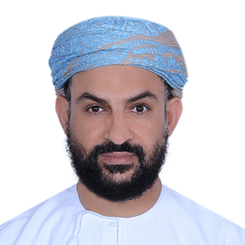
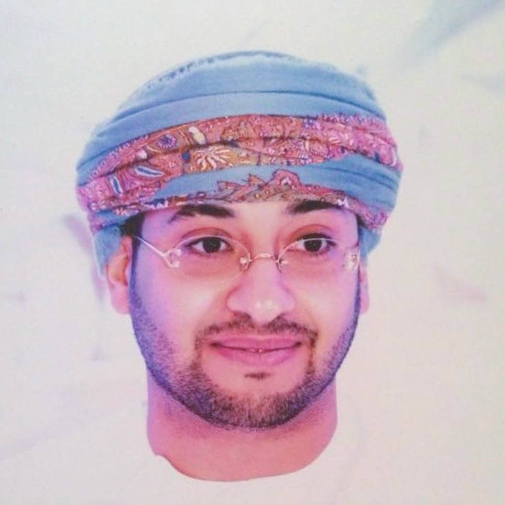
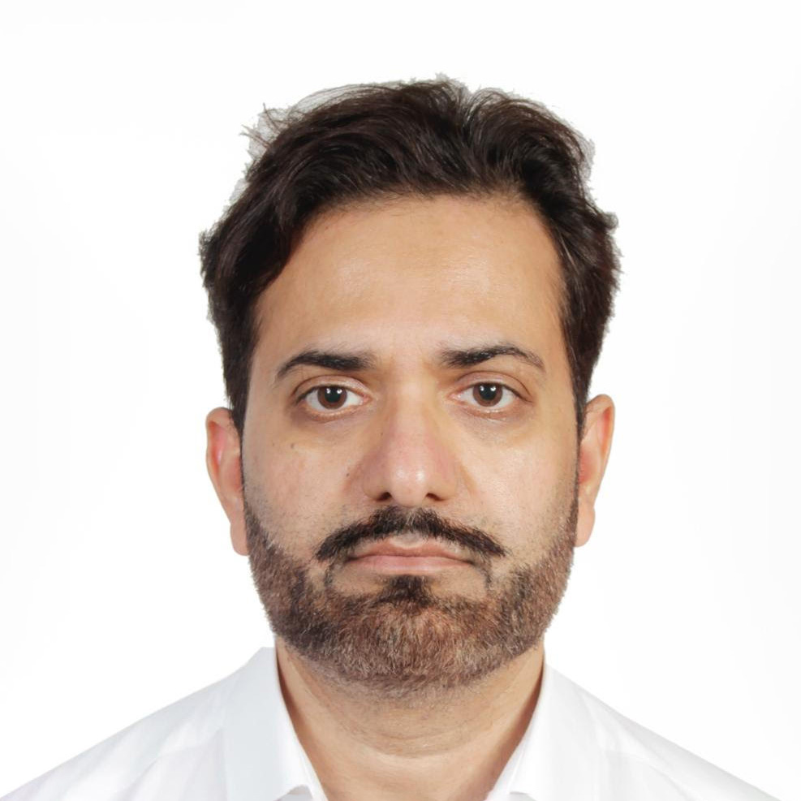
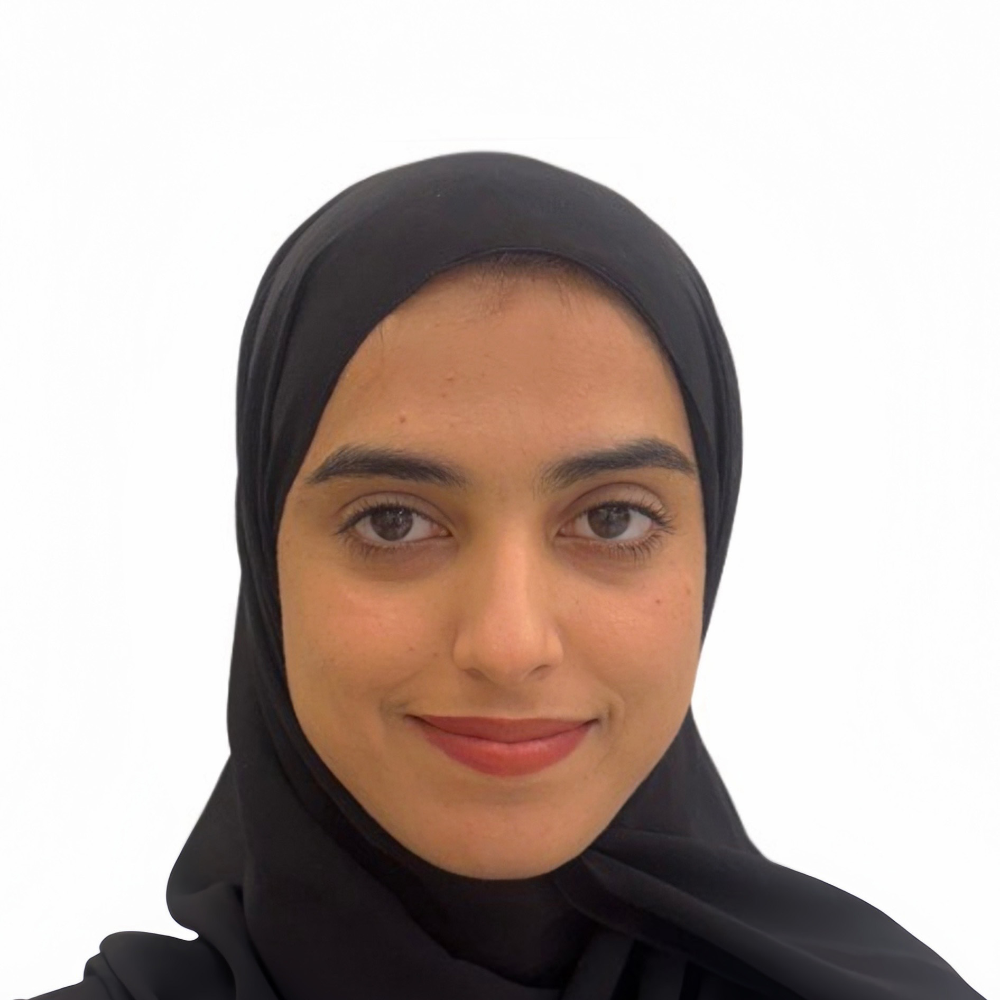
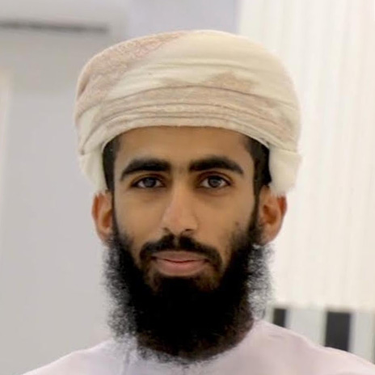

Research Team
A collaborative effort driving innovation in Omani healthcare.

Dr. Abdullah M. Al Alawi
Principal Investigator
Senior Consultant in General Internal Medicine and Program Director of the Internal Medicine Residency at OMSB. An active clinician–researcher focused on hospital medicine, patient outcomes, and AI in medicine.

Dr. Mohamed Najeeb Al-Rawahi
Cardiac Electrophysiologist
A cardiac electrophysiologist at Sultan Qaboos University Hospital and the National Heart Center. Interests include AI in cardiovascular care, arrhythmia detection, and clinical decision support.

Dr. Salim Al-Busaidi
Specialist Physician, Internal Medicine
Specialist Physician in Internal Medicine with interests in clinical research, medical education, and digital health innovation.

Dr. Zubaida Al Falahi
Acute Medicine Professional
Medical professional in acute medicine with an interest in clinical excellence, medical education, and service development.

Dr. Muhammad Shoaib
Consultant, General Internal Medicine
Consultant at Sultan Qaboos University Hospital. Interests span hospital medicine, lipidology, preventive cardiovascular care, and AI-based risk prediction.

Dr. Tamadhir Al-Mahrouqi
Psychiatry Physician
Psychiatry physician at SQUH, engaged in clinical care, research, and medical education. Focus on digital mental health innovations and AI integration in psychiatric practice.

Dr. Kawthar Al Lawati
Internal Medicine Resident
Third year Internal Medicine Resident at Oman Medical Specialty Board (OMSB). Keen about the world of medical research.
HK
Dr. Hour Al Kaabi
Internal Medicine Specialist
Internal Medicine Specialist at MCMSS, with a focus on leadership, medical education, research, and AI integration in medicine.

Dr. Noor Alkaabi
Internal Medicine Resident
Internal Medicine Resident at OMSB, graduate of SQU, interested in medical research and AI in healthcare.

Mohammed Al Habsi
Medical Student & Researcher
Medical student at Sultan Qaboos University, researcher with interests in cardiology, AI, and population-based clinical studies.
AB
Afra Albadi
AI Engineer
AI student at GUtech experienced in full-stack development, machine learning, and hardware configuration. Skilled in building RAG pipelines, deploying local LLMs, and developing applications using Python and React.